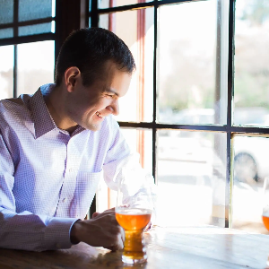

Scientia Beverage Consulting helps breweries, distilleries, wineries, and beverage brands make better decisions through market analysis, analytics, and strategy. It began as a passion project to help local producers grow, and it has become a practice built on a simple idea: you probably already have the data you need, and the value is in knowing what to do with it.

I’m Matt Johnson, the founder of Scientia. My background combines a computer science education (M.S. from Washington University in St. Louis and B.S. from Georgia Tech, both in Computer Science with a focus on artificial intelligence and computational theory) with more than a decade of strategy, technology, and analytics work.
I started in technology at Boeing, where I moved from software development into portfolio management and became a subject matter expert in business intelligence. I then spent five years as a Senior Consultant at Slalom Consulting, leading strategy engagements on operating models, digital commerce, and commercial excellence for organizations ranging from global enterprises to small teams.
Since 2021 I’ve applied that experience to craft beverage. Today I’m Data & Analytics Manager at Maui Brewing, where I own data quality across NetSuite, Arryved, and VIP and build analytics for sales and operations across 25+ distributors in the western U.S., nearly 200 items, and a portfolio that includes a spirits program. Before that, as Sales Strategy and Analytics Manager at August Schell Brewing, I turned VIP, NielsenIQ, and internal sales data into KPI reporting, forecasts, and market insights that guided sales, operations, and marketing across a six-state footprint.
That mix of consulting discipline, hands-on data skills, and time spent on the sales and brewing side of the business is what I bring to every client.
I start with your questions, not a template. I’m direct about what the data does and doesn’t say, I explain it in plain language, and I build tools your team can run after I’m gone.
Book a free intro call, or send me a note and I’ll reply quickly.
Book a free intro call Email me